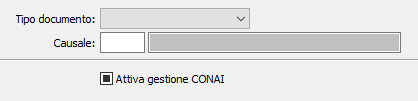

Configurazione causali
La tabella consente di definire per ogni causale di tipologia documento se attivare o meno la gestione CONAI.

Se la tabella è vuota o viene impostato su tipo documento tutti e abilitato il flag “Attiva gestione CONAI”, valgono le regole definite a livello di tipo documento dalla configurazione CONAI.
Per disabilitare la gestione di un tipo documento o di una specifica causale è necessario impostare il tipo documento, senza o con l’indicazione della causale, e non attivare il flag.
La ricerca all’interno della tabella è effettuata in prima battuta con tipo documento e causale, se non viene trovato nessun record la ricerca viene effettuata specificando il tipo documento e lasciando la causale vuota, se non viene trovato nessun record la ricerca viene eseguita con tipo documento “Tutti” e causale vuota.